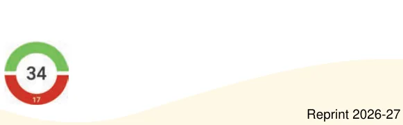
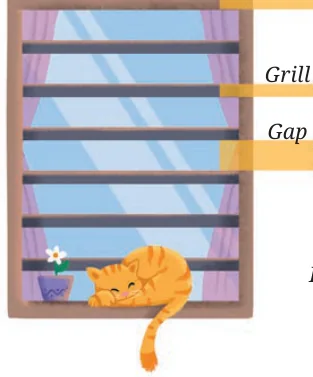

- 1.Find the values of the following expressions by writing the terms
in each case.
- (a)\(28 - 7 + 8\) (b) \(39 - 2 \times 6 + 11\)
- (c)\(40 - 10 + 10 + 10\) (d) \(48 - 10 \times 2 + 16 \div 2\)
- (e)\(6 \times 3 - 4 \times 8 \times 5\)
- 2.Write a story/situation for each of the following expressions and
find their values.
- (a)\(89 + 21 - 10\) (b) \(5 \times 12 - 6\)
- (c)\(4 \times 9 + 2 \times 6\)
- 3.For each of the following situations, write the expression describing
the situation, identify its terms and find the value of the expression.
- (a)Queen Alia gave 100 gold coins to Princess Elsa and 100 gold
coins to Princess Anna last year. Princess Elsa used the coins to start a business and doubled her coins. Princess Anna bought jewellery and has only half of the coins left. Write an expression describing how many gold coins Princess Elsa and Princess Anna together have.
- (b)A metro train ticket between two stations is ₹40 for an adult
and ₹20 for a child. What is the total cost of tickets: for four adults and three children? for two groups having three adults each?

- (c)Find the total height of the window

by writing an expression describing the relationship among the measurements shown in the picture.